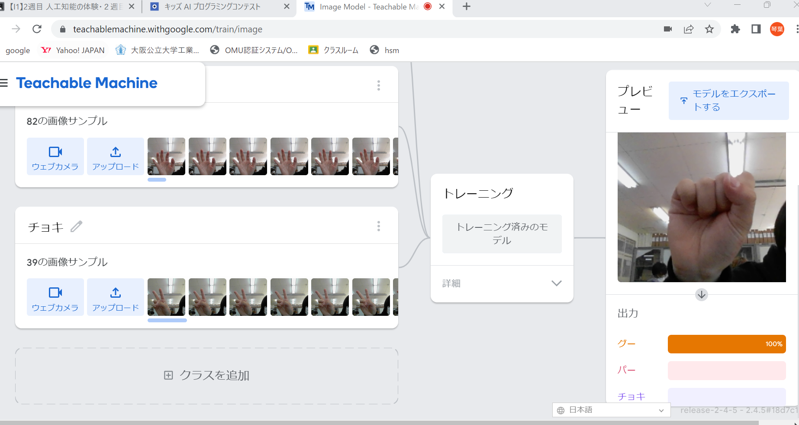

第2週目
2-1 １週目のレポートをHTMLで作る
１週目のレポート
1.内容
先週のホームページを作ったサイトを使用し、レポートを作った。これも先週のホームページ同様、URLを検索すると表示される。
2.感想
HTMLを使用することによって、サイト内にファイルを添付しておくことによって自動的にレポートに写真が添付されていて便利だなと思った。編集は初めて使ったサイトで慣れないことも多かったが、きちんと反映されてて安心した。
2-2 機械学習体験

1.内容
カメラにグー、チョキ、パー映すとそれぞれ判別するという内容。
2.感想
パソコンの不具合等でなかなか先に進めることができなかったけど最終的に完成させることができたのでよかった。手をかざすだけできちんと判別できるのがすごいなと思った。
2-3 VR（バーチャルリアリティー：Virtual Reality）の体験
1.内容
VR空間でほかの人ともつながり、会議をした。
2.感想
3人でVRを回していたのでほとんど楽しめる時間がなかったのが残念だったけど、周りに何人か人がいたことや、黒板に字が書けるところが面白かった。